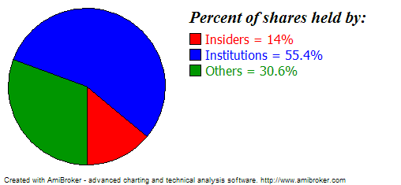

Completely new low-level graphic AFL interface closely mimics Windows GDI API, with the same names for most functions, for easier use by GDI-experienced programmers. The only differences are:
1. Compared to Windows GDI, all functions are prefixed with 'Gfx'
2. Pen/brush/font creation/selection is simplified to make it easier to use and
you don't need to care about the deletion of GDI objects
3. Three overlay modes are available so you can mix low-level graphics with regular
Plot() statements:
(mode = 0 (default) - overlay low-level graphics on top of charts, mode = 1 -
overlay charts on top of low-level graphics, mode = 2 - draw only low-level graphics
(no regular charts/grid/titles/etc))
All functions use pixels as coordinates (when used on screen). For printouts and metafiles, pixels are mapped to logical units to match the higher resolution of printers. Use Status("pxwidth") and Status("pxheight") to find the pixel dimensions of drawing surface.
Available low-level graphics functions (click on the links for a detailed explanation):
GfxMoveTo( x, y )
GfxLineTo( x, y )
GfxSetPixel( x, y, color )
GfxTextOut( "text", x, y )
GfxSelectPen( color, width = 1, penstyle = penSolid )
GfxSelectSolidBrush( color )
GfxSelectFont( "facename", pointsize, weight = fontNormal,
italic = False, underline = False, orientation = 0 )
GfxRectangle( x1, y1, x2, y2 )
GfxRoundRect( x1, y1, x2, y2, x3, y3 )
GfxPie( x1, y1, x2, y2, x3, y3, x4, y4 )
GfxEllipse( x1, y1, x2, y2 )
GfxCircle( x, y, radius )
GfxChord( x1, y1, x2, y2, x3, y3, x4, y4 )
GfxArc( x1, y1, x2, y2, x3, y3, x4, y4 )
GfxPolygon( x1, y1, x2, y2, ... )
GfxPolyline( x1, y1, x2, y2, ... )
GfxSetTextColor( color )
GfxSetTextAlign( align )
GfxSetBkColor( color )
GfxSetBkMode( bkmode )
GfxGradientRect( x1, y1, x2, y2, fromcolor, tocolor )
GfxDrawText( "text", left, top, right, bottom, format
= 0 )
GfxSetOverlayMode( mode = 0 )
NEW FUNCTIONS IN 5.80
GfxSetCoordsMode(
mode ) - allows you to choose between pixel and bar/price modes.
GfxSetZOrder( layer ) -
allows you to place Gfx graphics on user-specified Z-axis (depth) layer.
GfxGetTextWidth( "text"
) - returns the pixel width of specified string. NOTE: It is slow because it has
to create a temporary DC and font to measure the text. It takes 40us (microseconds),
which is about 40 times more than other Gfx functions.
COORDINATE MODES
Starting with version 5.80 AmiBroker supports using two different coordinate modes in low-level graphics: pixel mode and bar/price mode.
The GfxSetCoords mode function allows you to switch coordinate system for low-level graphics functions from screen pixel (mode = 0), the default, to
bar/price mode (mode = 1) where X is expressed as a bar index and Y as price.
This new mode allows for much easier overlays on top of existing charts without the need to convert between bar/price and pixels
and without any extra refresh normally required in old versions when the Y scale changes.
The function can be called to switch back and forth from pixel -> bar/price
mode and vice versa a number of times,
allowing you to mix different modes in the same chart.
When coordinate mode 1 is selected (bar/price), coordinates can be fractional. For example, if x is 2.5, it means halfway between bar 2 and 3.
Example:
// The sample shows
how using GfxSetCoordsMode( 1 )
// results in
// a) easier coding of overlay charts that plot
on top of built-in charts (no need to convert from bar/price to pixels)
// b) perfect matching between built-in Plot()
and Gfx positioning
Plot( C, "Price", colorDefault, styleLine );
GfxSetOverlayMode( 1 );
GfxSetCoordsMode( 1 ); //
bar/price mode (instead of pixel)
GfxSelectSolidBrush( colorRed );
GfxSelectPen( colorRed );
boxheight = 0.01 *
( HighestVisibleValue( C )
- LowestVisibleValue( C )
);
bi = BarIndex();
start = FirstVisibleValue(
bi );
end = LastVisibleValue(
bi );
for ( i =
start; i <= end; i++ )
{
Cl = Close[
i ];
Op = Open[
i ];
Color = IIf( Cl > Op, colorGreen, colorRed );
GfxSelectPen(
Color );
GfxSelectSolidBrush(
Color );
bodyup = Max( Op,
Cl );
bodydn = Min( Op,
Cl );
GfxEllipse(
i - 0.4, bodyup,
i + 0.4, bodydn );
GfxMoveTo(
i, H[ i ]
);
GfxLineTo(
i, bodyup );
GfxMoveTo(
i, bodydn );
GfxLineTo(
i, L[ i ]
);
}
Z-order SUPPORT
Starting from version 5.80 AmiBroker supports placing low-level graphics in different Z-order layers. A new GfxSetZOrder function is provided to allow this, as shown in the example:
Plot( C, "Price", colorDefault );
GraphGridZOrder = 1;
GfxSetZOrder(0);
GfxSelectSolidBrush( colorGreen );
GfxCircle( 100, 100, 100 );
GfxSetZOrder(-1);
GfxSelectSolidBrush( colorRed );
GfxCircle( 150, 150, 100 );
GfxSetZOrder(-2);
GfxSelectSolidBrush( colorBlue );
GfxCircle( 180, 180, 100 );
Example 1. Pie chart showing percentage holdings of various kinds of shareholders.
Here is how it looks:

Here is the formula:
// OverlayMode = 2 means
that nothing except
// low-level gfx should be drawn
// there will be no grid, no title line, no plots
// and nothing except what we code using Gfx* calls
GfxSetOverlayMode(2);
HInsiders = GetFnData("InsiderHoldPercent");
HInst = GetFnData("InstitutionHoldPercent");
function DrawPiePercent(
x, y, radius, startpct, endpct )
{
PI = 3.1415926;
sa = 2 * PI * startpct
/ 100;
ea = 2 * PI * endpct / 100;
xsa = x + radius * sin(
sa );
ysa = y + radius * cos(
sa );
xea = x + radius * sin(
ea );
yea = y + radius * cos(
ea );
GfxPie( x - radius, y -
radius, x + radius, y + radius, xsa, ysa, xea, yea );
}
radius = 0.45 * Status("pxheight"); //
get pixel height of the chart and use 45% for pie chart radius
textoffset = 2.4 * radius;
GfxSelectSolidBrush( colorRed );
DrawPiePercent( 1.1*radius, 1.1*radius,
radius, 0, HInsiders );
GfxRectangle( textoffset
, 42, textoffset +15, 57 );
GfxSelectSolidBrush( colorBlue );
DrawPiePercent( 1.1*radius, 1.1*radius,
radius, HInsiders, HInst + HInsiders );
GfxRectangle( textoffset
, 62, textoffset +15, 77 );
GfxSelectSolidBrush( colorGreen );
DrawPiePercent( 1.1*radius, 1.1*radius,
radius, HInst + HInsiders, 100 );
GfxRectangle( textoffset
, 82, textoffset +15, 97 );
GfxSelectFont("Times
New Roman", 16, 700, True );
GfxTextOut("Percent
of shares held by:", textoffset , 10 );
GfxSelectFont("Tahoma", 12 );
GfxSetTextColor( colorRed );
GfxTextOut( "Insiders
= " + HInsiders + "%",
textoffset + 20, 40 );
GfxSetTextColor( colorBlue );
GfxTextOut( "Institutions
= " + HInst + "%",
textoffset + 20, 60 );
GfxSetTextColor( colorGreen );
GfxTextOut( "Others
= " + ( 100 -
(HInst+HInsiders) ) + "%",
textoffset + 20, 80 );
GfxSelectFont("Tahoma", 8 );
Example 2. Formatted (table-like) output sample using low-level graphics functions
// formatted text output
sample via low-level gfx functions
CellHeight = 20;
CellWidth = 100;
GfxSelectFont( "Tahoma",
CellHeight/2 );
function PrintInCell(
string, row, Col )
{
GfxDrawText( string,
Col * CellWidth, row * CellHeight, (Col + 1 )
* CellWidth, (row + 1 )
* CellHeight, 0 );
}
PrintInCell( "Open", 0, 0 );
PrintInCell( "High", 0, 1 );
PrintInCell( "Low", 0, 2 );
PrintInCell( "Close", 0, 3 );
PrintInCell( "Volume", 0, 4 );
GfxSelectPen( colorBlue );
for( i = 1;
i < 10 && i < BarCount;
i++ )
{
PrintInCell( StrFormat("%g", O[
i ] ), i, 0 );
PrintInCell( StrFormat("%g", H[
i ] ), i, 1 );
PrintInCell( StrFormat("%g", L[
i ] ), i, 2 );
PrintInCell( StrFormat("%g", C[
i ] ), i, 3 );
PrintInCell( StrFormat("%g", V[
i ] ), i, 4 );
GfxMoveTo( 0,
i * CellHeight );
GfxLineTo( 5 *
CellWidth, i * CellHeight );
}
GfxMoveTo( 0,
i * CellHeight );
GfxLineTo( 5 *
CellWidth, i * CellHeight );
for( Col = 1;
Col < 6; Col++ )
{
GfxMoveTo( Col * CellWidth, 0);
GfxLineTo( Col * CellWidth, 10 *
CellHeight );
}
Title="";
Example 3. Low-level graphics demo featuring pie section, a polygon, color wheel, animated text, and chart overlay.
// overlay mode = 1 means
that
// Low-level gfx stuff should come in background
GfxSetOverlayMode(1);
Plot(C, "Close", colorBlack, styleCandle );
PI = 3.1415926;
k = (GetPerformanceCounter()/100)%256;
for( i = 0;
i < 256; i++ )
{
x = 2 * PI * i / 256;
GfxMoveTo( 100+k, 100 );
GfxSelectPen( ColorHSB(
( i + k ) % 256, 255, 255 ), 4 );
GfxLineTo( 100 +k+ 100 * sin(
x ), 100 + 100 * cos(
x ) );
}
GfxSelectFont("Tahoma", 20, 700 );
GfxSetBkMode(1);
GfxSetTextColor(colorBrown);
GfxTextOut("Testing
graphic capabilites", 20, 128-k/2 );
GfxSelectPen( colorRed );
GfxSelectSolidBrush( colorBlue );
GfxChord(100,0,200,100,150,0,200,50);
//GfxPie(100,0,200,100,150,0,200,50);
GfxSelectPen( colorGreen, 2 );
GfxSelectSolidBrush( colorYellow );
GfxPolygon(250,200,200,200,250,0,200,50);
RequestTimedRefresh(1);
Example 4. Low-level graphic positioning - shows how to align built-in plots() with the low-level graphics. Note that if the scale changes (pxheight changes) due to new data or different zoom level, it needs additional refresh to read the new scale and adjust the positions properly.
Plot(C, "Price", colorBlack, styleLine );
GfxSetOverlayMode(0);
Miny = Status("axisminy");
Maxy = Status("axismaxy");
lvb = Status("lastvisiblebar");
fvb = Status("firstvisiblebar");
pxwidth = Status("pxwidth");
pxheight = Status("pxheight");
TotalBars = Lvb - fvb;
axisarea = 56; //
may need adjustment if you are using non-default font for axis
GfxSelectSolidBrush( colorRed );
GfxSelectPen( colorRed );
for( i = 0;
i < TotalBars AND i < ( BarCount -
fvb ); i++ )
{
x = 5 + i * (pxwidth -
axisarea - 10) / ( TotalBars
+ 1 );
y = 5 + ( C[
i + fvb ] - Miny ) * ( pxheight - 10 )/
( Maxy - Miny );
GfxRectangle(
x - 1, pxheight - y - 1,
x + 2, pxheight - y + 2);
}